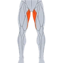

Wide-Legged Forward Fold
A standing fold from a wide stance with the hands on the floor, lengthening the hamstrings and the inner thighs while the spine hangs long.
Upper legs · Bodyweight · Beginner

Muscles worked by the Wide-Legged Forward Fold
Primary

AdductorsHip AdductorsSecondary
Also called: hip adductors, inner thigh, adductor muscles, groin, hamstring, hamstrings.
Equipment
No equipment — this is a bodyweight exercise.
How to do the Wide-Legged Forward Fold
- Stand with the feet wide apart and the outer edges parallel.
- Place the hands on the hips, lift the chest and hinge forward from the hip joints.
- Bring the hands to the floor under the shoulders and let the head hang.
- Hold the fold for the prescribed time, shifting the weight slightly into the balls of the feet.
- Bring the hands back to the hips and come up with a flat back.
Form tips
- Micro-bend the knees so the fold comes from the hips rather than the lower back.
- Keep the feet parallel; turning them out takes the stretch out of the inner thighs.
- Rest the hands on blocks when the floor is out of reach.
At a glance
| Body part | Upper legs |
|---|---|
| Category | Stretching |
| Force type | Static |
| Mechanic | Compound |
| Difficulty | Beginner |
| Equipment | Bodyweight |
| Goals | Mobility |
| Tags | Mobility, Stretching |
| MET | 5.0 (metabolic equivalent, for calorie estimates) |
| Unilateral | No |
| Bodyweight | Yes |
| Dataset id | wide-legged-forward-fold |
Wide-Legged Forward Fold in German & Spanish
| German | Weite Vorbeuge im Stand |
|---|---|
| Spanish | Flexión con Piernas Abiertas |
Descriptions, instructions and tips ship in all three languages in the JSON.
Related exercises
Exercise data (JSON)
The record below is exactly what exercises.json ships for this exercise — names, descriptions, instructions and tips in English, German and Spanish.
{
"id": "wide-legged-forward-fold",
"name_en": "Wide-Legged Forward Fold",
"name_de": "Weite Vorbeuge im Stand",
"name_es": "Flexión con Piernas Abiertas",
"description_en": "A standing fold from a wide stance with the hands on the floor, lengthening the hamstrings and the inner thighs while the spine hangs long.",
"description_de": "Eine stehende Vorbeuge aus weitem Stand mit den Händen am Boden - verlängert Beinrückseite und Innenschenkel, während die Wirbelsäule lang hängt.",
"description_es": "Una flexión de pie desde una base amplia con las manos en el suelo, que alarga los isquiotibiales y la cara interna de los muslos mientras la columna cuelga larga.",
"category": "stretching",
"force_type": "static",
"mechanic": "compound",
"difficulty": "beginner",
"body_part": "upper_legs",
"primary_muscles": [
"adductors",
"hamstrings"
],
"secondary_muscles": [
"erector_spinae",
"gastrocnemius"
],
"goals": [
"mobility"
],
"tags": [
"mobility",
"stretching"
],
"is_unilateral": false,
"is_bodyweight": true,
"instructions_en": [
"Stand with the feet wide apart and the outer edges parallel.",
"Place the hands on the hips, lift the chest and hinge forward from the hip joints.",
"Bring the hands to the floor under the shoulders and let the head hang.",
"Hold the fold for the prescribed time, shifting the weight slightly into the balls of the feet.",
"Bring the hands back to the hips and come up with a flat back."
],
"instructions_de": [
"Stell die Füße weit auseinander, die Außenkanten parallel.",
"Leg die Hände an die Hüften, heb den Brustkorb und kipp aus den Hüftgelenken nach vorn.",
"Setz die Hände unter den Schultern auf den Boden und lass den Kopf hängen.",
"Halte die Vorbeuge für die vorgegebene Zeit und verlager das Gewicht leicht in die Fußballen.",
"Bring die Hände zurück an die Hüften und komm mit flachem Rücken hoch."
],
"instructions_es": [
"Ponte de pie con los pies muy separados y los bordes externos paralelos.",
"Apoya las manos en las caderas, eleva el pecho y bascula hacia delante desde las articulaciones de la cadera.",
"Lleva las manos al suelo bajo los hombros y deja que la cabeza cuelgue.",
"Mantén la flexión durante el tiempo indicado, desplazando ligeramente el peso hacia las puntas de los pies.",
"Devuelve las manos a las caderas y sube con la espalda plana."
],
"tips_en": [
"Micro-bend the knees so the fold comes from the hips rather than the lower back.",
"Keep the feet parallel; turning them out takes the stretch out of the inner thighs.",
"Rest the hands on blocks when the floor is out of reach."
],
"tips_de": [
"Beug die Knie minimal, damit die Beuge aus der Hüfte kommt und nicht aus dem unteren Rücken.",
"Halte die Füße parallel; nach außen gedreht verlierst du die Dehnung der Innenschenkel.",
"Setz die Hände auf Blöcke, wenn der Boden zu weit weg ist."
],
"tips_es": [
"Deja una micro flexión en las rodillas para que la flexión venga de las caderas y no de la zona lumbar.",
"Mantén los pies paralelos; girarlos hacia fuera quita el estiramiento de la cara interna de los muslos.",
"Apoya las manos en bloques cuando el suelo quede lejos."
],
"met": 5.0,
"images": {
"flat": {
"main": "images/flat/wide-legged-forward-fold-main.webp"
}
}
}Fetch just this exercise
const { exercises } = await fetch(
"https://exercise-dataset.com/exercises.json"
).then(r => r.json());
const ex = exercises.find(e => e.id === "wide-legged-forward-fold");Free for personal and commercial in-app use with attribution (“Exercise data by RepDB”) — see the license and ready-made attribution snippets. Redistributing the data as a dataset or API is not permitted.